| 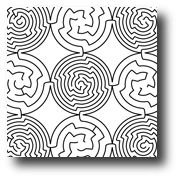 |
Maze DesignComputer-based maze design is a mix of techniques from discrete geometry and non-photorealistic rendering. The twin questions of complexity and aesthetics in mazes both represent deep problems in computer graphics. |
| 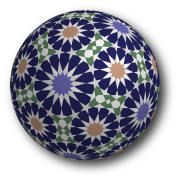 |
Islamic star patternsTechniques for designing, rendering, and manufacturing Islamic star patterns, a traditional form of ornamentation that can be found across Europe, Asia, and Africa. |
| 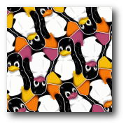 |
EscherizationAn optimization process figures out how to deform an arbitrary shape to make it tile the plane, making it easier to produce new tessellations in the style of M.C. Escher. |
| 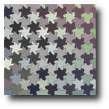 |
Metamorphoses and deformationsSome occasional work that encompasses Escher's use of the theme of metamorphosis, and the Parquet Deformations introduced by Huff and later popularized by Hofstadter. |
| 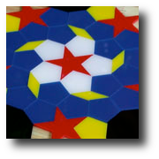 |
Fivefold tilingsI'm interested in the fivefold tiling problem, an open problem in tiling theory. The search for a solution produces many interesting and attractive tilings along the way. |
| 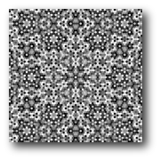 |
Aliasing ArtifactsVery simple programs can render rich and unexpected moire patterns. One especially surprising approach exposes low-level round-off behaviour in the floating point unit. |
| 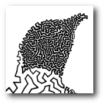 |
TSP ArtA form of halftoning in which an image is represented via a single, continuous closed path discovered as the (approximate) solution to an instance of the Traveling Salesman Problem. |
| 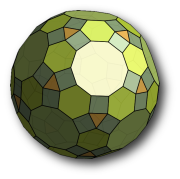 |
Near MissesA near miss is a polyhedron in which the faces are very nearly regular. The discrepancy is so small that you can probably build the polyhedron cleanly from paper using regular polygons. |
| 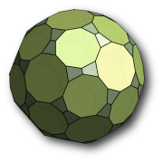 |
SymmetrohedraA simple construction based on finite symmetry groups yields a rich class of polyhedra containing many regular faces. A subset of a construction used later for Islamic star patterns. |
| 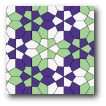 |
Voronoi ArtMany interesting ornamental designs can be constructed by computing the Voronoi diagrams of well-chosen arrangements of points. |
| 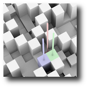 |
Ulam SpiralA few bits of math porn: pretty renderings of diagrams related to the Ulam spiral. |
| 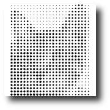 |
Rotated Square IllusionA fun, abstracted image representation based on rotated, scaled squares. |
| 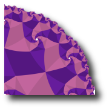 |
Hyperbolic SpidronsA short fantasy regarding the interpretation of abstract geometric spiral arrangements in hyperbolic geometry. |
| 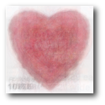 |
My Funny ValentineAverage love (sorry if that sounds mean). |
Common Currency
I'm just a bill |
| Craig S. Kaplan | Last updated: Thursday, 14-May-2009 11:28:11 EDT |